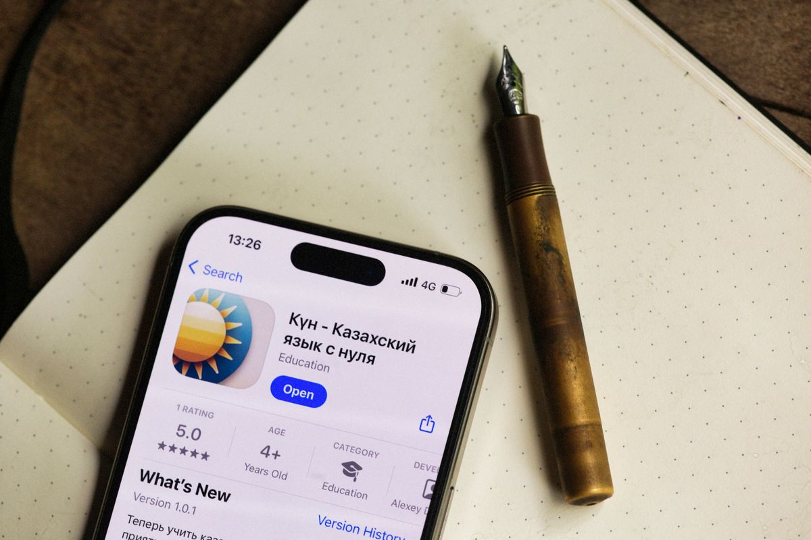
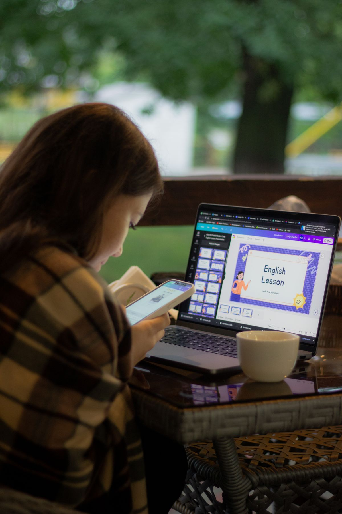

Duolingo itu gratis, tapi versi paling enaknya justru berbayar. Super Duolingo menghilangkan iklan dan batas hearts, jadi kamu bisa belajar tanpa jeda. Kabar baiknya, ada jalur resmi untuk memakai Super tanpa membayar harga penuh: pelanggan SIMPATI Plus Telkomsel bisa mengklaim Super Duolingo gratis selama satu bulan.
Jalur ini resmi dan legal, hasil kerja sama INDICO, anak perusahaan Telkomsel, dengan Duolingo yang diumumkan pada September 2026. Tapi ada syaratnya, dan syarat itu berbayar. Artikel ini menjelaskan apa yang kamu dapat, berapa biayanya, dan cara klaimnya langkah demi langkah, per Oktober 2026.
Apa yang kamu dapat dari Super Duolingo
Duolingo versi gratis sudah cukup untuk belajar. Kamu bisa memilih dari lebih dari 40 bahasa, mengerjakan pelajaran harian, dan menjaga streak. Yang membatasi adalah sistem hearts: setiap jawaban salah mengurangi satu hearts, dan kalau hearts habis kamu harus menunggu atau menonton iklan. Iklan juga muncul di sela pelajaran.
Super Duolingo menghilangkan dua gangguan itu. Hearts jadi tidak terbatas, jadi salah jawab berkali-kali pun pelajaran tetap jalan. Iklan hilang, pelajaran bisa diunduh untuk belajar offline, dan ada latihan khusus untuk mengulang kesalahanmu. Intinya, Super bukan menambah pelajaran baru, tapi menghilangkan rem yang ada di versi gratis.

Syaratnya: SIMPATI Plus, dan itu berbayar
Ini bagian yang wajib dibaca baik-baik. Super Duolingo yang gratis itu berlaku satu bulan, dan hanya bisa diklaim oleh pelanggan SIMPATI Plus. SIMPATI Plus sendiri adalah layanan berlangganan Telkomsel yang harganya Rp20.000 per bulan, menurut halaman resmi Telkomsel. Jadi uang tetap keluar, tapi bukan untuk Super langsung, melainkan untuk langganan SIMPATI Plus.
Apakah tetap sepadan? Tergantung kebutuhanmu. SIMPATI Plus bukan cuma berisi Duolingo: langganan ini memberi akses ke lebih dari 100 penawaran dari lebih dari 40 brand, termasuk Prime Video Mobile selama satu bulan dan kuota telepon 60 menit ke sesama Telkomsel. Kalau ada dua atau tiga penawaran yang memang kamu pakai, Rp20.000 itu jadi masuk akal. Kalau cuma mengejar Super, bandingkan dulu dengan harga Super di Play Store atau App Store sebelum klaim.
Satu lagi: kuota klaimnya terbatas. Telkomsel sendiri menulis, kalau kuota deal habis, deal tidak bisa diklaim dan pelanggan harus menunggu kuota berikutnya atau memilih deal lain. Jadi kalau tombol klaimnya tidak muncul, kemungkinan kuotanya memang sudah habis, bukan aplikasimu yang rusak.
Cara klaim Super Duolingo gratis lewat MyTelkomsel
Kalau kamu sudah jadi pelanggan SIMPATI, atau mau berlangganan, langkahnya seperti ini:
- Buka aplikasi MyTelkomsel dan pastikan kamu sudah berlangganan SIMPATI Plus. Kalau belum, daftar dulu dari menu SIMPATI Plus di aplikasi.
- Cari penawaran Duolingo di daftar deals SIMPATI Plus.
- Ketuk Klaim. Kode voucher akan dikirimkan ke kamu.
- Buka aplikasi atau situs Duolingo, masuk ke akunmu, lalu tukarkan kode voucher itu di tempat penukaran kode.
- Periksa status akunmu: kalau berhasil, label Super akan muncul dan hearts-mu tidak lagi berkurang.
Kalau kode voucher tidak bisa ditukar, cek dulu masa berlakunya dan pastikan kamu menukarnya di akun yang sama dengan yang kamu pakai belajar. Jangan menukar kode di akun baru kalau progres belajarmu ada di akun lama.

Biar sebulan gratisnya tidak sia-sia
Satu bulan itu singkat. Supaya terasa hasilnya, pakai cara ini:
- Pilih satu bahasa dan fokus di sana. Pindah-pindah bahasa bikin progresmu tipis di mana-mana.
- Nyalakan pengingat harian dan jaga streak, karena konsistensi 10 menit sehari lebih berpengaruh daripada belajar dua jam sekali seminggu.
- Pakai fitur latihan kesalahan yang terbuka di Super untuk mengulang soal yang pernah kamu jawab salah.
- Unduh pelajaran untuk belajar offline, misalnya saat di perjalanan dan sinyal tidak stabil.
- Catat tanggal berakhirnya Super gratis itu. Kalau tidak mau lanjut bayar, matikan perpanjangan otomatis sebelum masa gratis habis, supaya tidak terpotong biaya langganan.
Kalau kamu bukan pelanggan Telkomsel
Jangan khawatir, Duolingo versi gratis tetap bisa dipakai siapa saja tanpa kartu Telkomsel. Semua pelajaran intinya sama, hanya saja kamu harus sabar dengan iklan dan hearts yang terbatas. Duolingo juga menyediakan uji coba gratis Super langsung dari aplikasinya, jadi kamu bisa merasakan dulu fitur premiumnya sebelum memutuskan. Cek saja penawaran uji cobanya di menu Super pada aplikasi Duolingo.
Intinya
Super Duolingo gratis satu bulan itu nyata dan resmi, tapi jalurnya lewat SIMPATI Plus yang berbayar Rp20.000 per bulan. Klaimnya lewat MyTelkomsel: pilih Duolingo, klaim voucher, lalu tukarkan di Duolingo. Kuotanya terbatas, jadi jangan tunda terlalu lama kalau memang mau coba. Dan ingat, yang bikin bahasa asingmu maju bukan status Supernya, tapi kebiasaan belajar tiap hari.